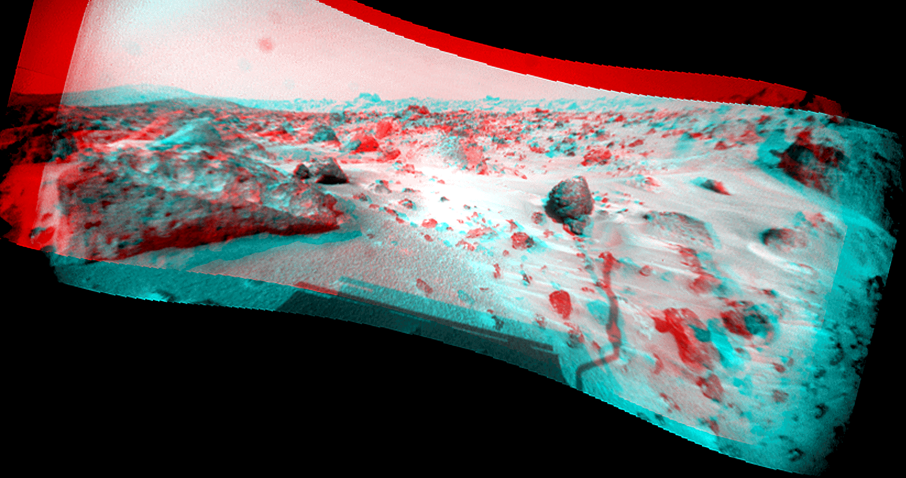

Feasibility of Using Digital Image Processing and Colorimetric Measurements to Estimate the Physicochemical Properties of Raw Cane Sugars
The presence of monosaccharide such as glucose and fructose along with amino acids and thus the Maillard reaction are the main factors influencing the formation of colorant components with higher molecular weights, such as Melanoidins (DeMan 1976). So, it is expected that higher invert sugar values and consequently higher monosaccharide compounds accelerate the chemical reactions and formation of colorants, and subsequently, the raw cane sugar would become darker. This means that there is an invert relationship between invert sugar and L* values. In the case of a*, higher positive values indicate a darker red. Therefore, physicochemical properties that induce a darker appearance of the raw cane sugar would increase a* values. The result shows a positive correlation between and ash (r = 0.84), invert sugar (r = 0.84), solution color (r = 0.96), and an invert correlation with sucrose (r = -0.75), pH (r = -0.86) and refractive index (r = -0.73).
The tendencies toward yellow and blue are represented by the positive and negative values of b*, respectively. Thus, b* has a relationship with darkness and the intensity of color. Also, positive correlations between b* and ash (r = 0.85), sucrose (r = 0.81), invert sugar (r = 0.83), and negative correlation between b* and solution color (r = -0.78), and pH (r = -0.75) were found. A direct relationship between hue (h) and lightness (L*) was also found. Therefore, any factor that would increase or decrease hue (h) would have the same relationship with L* parameter. The results indicated correlations between hue and ash (r = -0.82), invert sugar (r = -0.83), as well as solution color (r = -0.96).
The distance between chroma (C*) determines the saturation of color, and consequently, objects with a higher color intensity have a higher C*. The results showed that an increase in ash, invert and color solution leads to an increase in C*. Also, sucrose, pH and refractive index lead to a decrease in C* due to their impacts on decreasing the color. (…) Some impurities (known as ‘‘poison of crystal’’) influence the properties of the solutions, while others act on the crystals surfaces, changing their morphology or habits (Faria et al. 2003). The main non-sugar compounds are oligosaccharides, polysaccharides, glucose and fructose (Van der Poel et al. 2015).
Ferreira et al. (2011) reported that the presence of invert sugar during crystallization of raw sugars was one of the important parameters that can affect morphological changes, therefore producing the elongated crystals (Ferreira et al. 2011). D-Fructose and D-glucose, as invert sugar, influence the sucrose crystallization rate and change the crystal morphology.